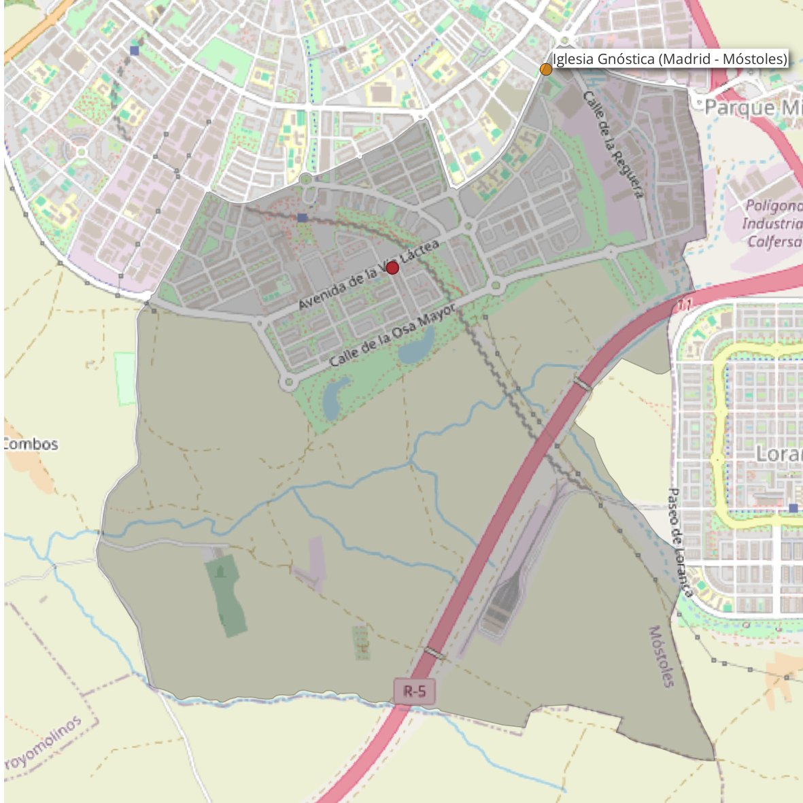
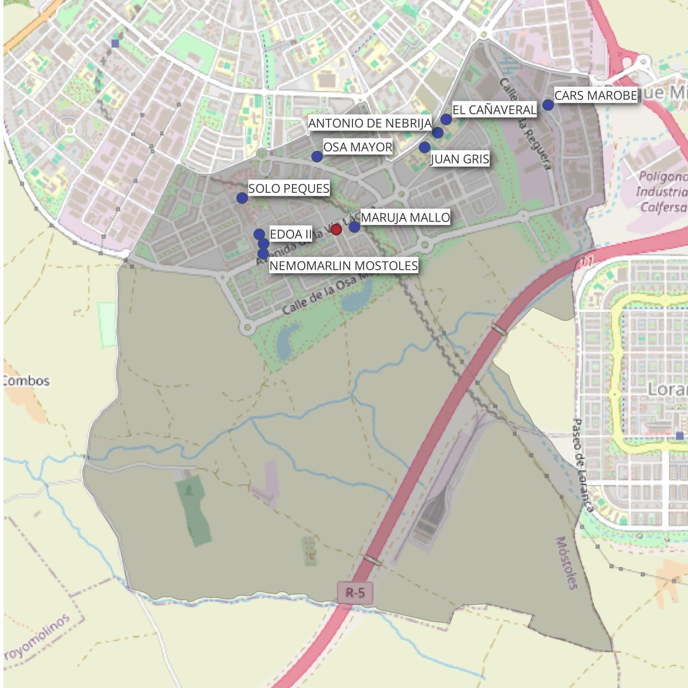

Puntos de interés en el territorio parroquial
Parroquia San Pablo VI (Móstoles) · Arciprestazgo de Móstoles
Entidades religiosas no católicas

1 entidad religiosa no católica en el territorio de la parroquia.
Gnósticos (1)
- Iglesia Gnóstica (Madrid - Móstoles)Avenida de la ONU 23 Local Posterior, Móstoles
Fuente: Registro de Entidades Religiosas del Ministerio de la Presidencia, Justicia y Relaciones con las Cortes. Situación en el mapa: dirección geocodificada con CartoCiudad (IGN) o Nominatim (OpenStreetMap).
Centros educativos

10 centros educativos en el territorio de la parroquia (público: 5, privado: 4, privado concertado: 1).
| Centro | Tipo | Titularidad | Domicilio | Web |
|---|---|---|---|---|
| ANTONIO DE NEBRIJA | Instituto de educación secundaria | Público | Avenida de la O.N.U., 83, 28936 Móstoles | Página web |
| CARS MAROBE | Centro privado de formación profesional específica | Privado | Calle Mercurio, 1, 28936 Móstoles | |
| CENTRO DE FORMACION EN PROFESIONES BIOSANITARIAS HM HOSPITALES | Centro privado de formación profesional específica | Privado concertado | Plaza del Sol, 30, 28938 Móstoles | Página web |
| EDOA II | Escuela infantil privada | Privado | Plaza del Sol, 20, 28938 Móstoles | Página web |
| EL CAÑAVERAL | Instituto de educación secundaria | Público | Avenida de la O.N.U., 81, 28936 Móstoles | Página web |
| JUAN GRIS | Instituto de educación secundaria | Público | Avenida de la O.N.U., 85-87, 28936 Móstoles | Página web |
| MARUJA MALLO | Colegio de educación infantil y primaria | Público | Avenida Vía Láctea c/v Av. de la ONU c/v Camino Human, 28936 Móstoles | Página web |
| NEMOMARLIN MOSTOLES | Escuela infantil privada | Privado | Avenida de la Vía Láctea, 40, 28938 Móstoles | |
| OSA MAYOR | Escuela infantil | Público | Calle Casiopea, 14, 28938 Móstoles | Página web |
| SOLO PEQUES | Escuela infantil privada | Privado | Plaza Plaza del Sol, 31, 28938 Móstoles | Página web |
Fuente: registro de centros educativos de la Comunidad de Madrid. Solo se recogen los centros de alta.